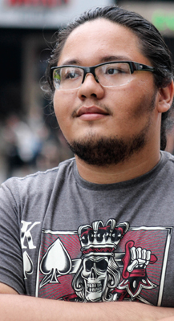

Um pouco sobre mim:
Motion Designer natural de Vitória/ES com formação técnica em Rádio e Televisão e Multimídia.
Profissional desde 2017, sempre tive a edição de vídeo como hobby, após anos resolvi buscar formação profissional, e assim, aumentar meu leque de habilidades.
Hoje em dia experienciado em Adobe After Effects, Cinema 4D e Blender, trabalho primariamente com produção de pacotes gráficos para programas de televisão de abrangência estadual e nacional. Também produzo comerciais veículados em redes sociais, rádio e televisão.